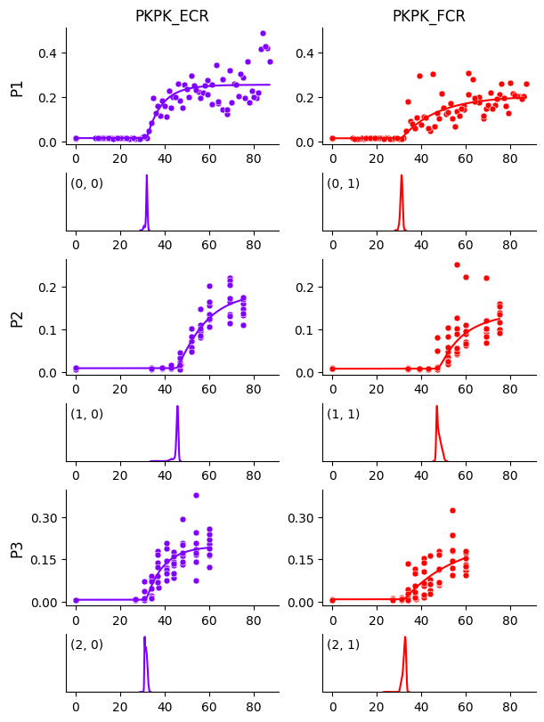

Mixture Extension#
We use the same dataset from Getting Started with a mixture model.
import os
import pandas as pd
import hbmep as mep
url = "https://raw.githubusercontent.com/hbmep/hbmep/refs/heads/docs-data/data/mock_data.csv"
df = pd.read_csv(url)
Build the model#
model = mep.StandardHB()
# Point to the respective columns in dataframe
model.intensity = "TMSIntensity"
model.features = ["participant"]
model.response = ["PKPK_ECR", "PKPK_FCR"]
# Set the function
model._model = model.rectified_logistic
# Enable mixture
model.use_mixture = True
Running the model#
# Process the dataframe
df, encoder = model.load(df)
# Run
mcmc, posterior = model.run(df=df)
# Check convergence diagnostics
summary_df = model.summary(posterior)
print(summary_df.to_string())
Show code cell output
2026-04-19 01:42:22,859 - hbmep.util.util - INFO - func:load took: 0.00 sec
2026-04-19 01:42:24,347 - hbmep.util.util - INFO - func:trace took: 1.49 sec
2026-04-19 01:42:24,348 - hbmep.model.base_model - INFO - Running...
Compiling.. : 0%| | 0/3000 [00:00<?, ?it/s]
Running chain 0: 0%| | 0/3000 [00:02<?, ?it/s]
Running chain 0: 5%|▌ | 150/3000 [00:06<01:26, 33.12it/s]
Running chain 0: 10%|█ | 300/3000 [00:07<00:45, 59.55it/s]
Running chain 0: 15%|█▌ | 450/3000 [00:08<00:29, 86.69it/s]
Running chain 0: 20%|██ | 600/3000 [00:09<00:22, 106.45it/s]
Running chain 0: 25%|██▌ | 750/3000 [00:10<00:17, 126.00it/s]
Running chain 0: 30%|███ | 900/3000 [00:11<00:15, 137.69it/s]
Running chain 0: 35%|███▌ | 1050/3000 [00:12<00:13, 140.77it/s]
Running chain 0: 40%|████ | 1200/3000 [00:13<00:11, 156.83it/s]
Running chain 0: 45%|████▌ | 1350/3000 [00:13<00:09, 166.06it/s]
Running chain 0: 50%|█████ | 1500/3000 [00:14<00:08, 179.40it/s]
Running chain 0: 55%|█████▌ | 1650/3000 [00:15<00:07, 192.78it/s]
Running chain 0: 60%|██████ | 1800/3000 [00:15<00:06, 196.39it/s]
Running chain 0: 65%|██████▌ | 1950/3000 [00:16<00:05, 198.03it/s]
Running chain 0: 70%|███████ | 2100/3000 [00:17<00:05, 179.16it/s]
Running chain 0: 75%|███████▌ | 2250/3000 [00:18<00:04, 172.73it/s]
Running chain 0: 80%|████████ | 2400/3000 [00:19<00:03, 166.17it/s]
Running chain 0: 85%|████████▌ | 2550/3000 [00:20<00:02, 160.66it/s]
Running chain 0: 90%|█████████ | 2700/3000 [00:21<00:01, 160.84it/s]
Running chain 0: 95%|█████████▌| 2850/3000 [00:22<00:00, 161.45it/s]
Running chain 2: 100%|██████████| 3000/3000 [00:23<00:00, 129.53it/s]
Running chain 1: 100%|██████████| 3000/3000 [00:23<00:00, 128.80it/s]
Running chain 0: 100%|██████████| 3000/3000 [00:23<00:00, 128.44it/s]
Running chain 3: 100%|██████████| 3000/3000 [00:24<00:00, 124.44it/s]
2026-04-19 01:42:48,815 - hbmep.util.util - INFO - func:run took: 25.96 sec
2026-04-19 01:42:48,946 - hbmep.util.util - INFO - func:summary took: 0.13 sec
mean sd hdi_2.5% hdi_97.5% mcse_mean mcse_sd ess_bulk ess_tail r_hat
a_loc 36.150 6.068 25.128 48.455 0.194 0.451 2277.0 886.0 1.00
a_scale 11.756 7.281 4.030 24.846 0.251 0.513 1463.0 985.0 1.00
b_scale 0.153 0.078 0.056 0.294 0.002 0.007 1143.0 1598.0 1.00
g_scale 0.013 0.005 0.006 0.023 0.000 0.000 1181.0 859.0 1.00
h_scale 0.262 0.115 0.115 0.470 0.004 0.009 1008.0 1011.0 1.00
v_scale 5.042 3.110 0.442 11.166 0.053 0.050 2678.0 2471.0 1.00
c₁_scale 4.655 3.019 0.234 10.467 0.045 0.047 3548.0 2424.0 1.00
c₂_scale 0.169 0.062 0.078 0.292 0.002 0.002 1326.0 1684.0 1.00
a[0, 0] 31.858 0.471 30.688 32.625 0.017 0.020 1723.0 996.0 1.00
a[0, 1] 31.061 0.504 30.042 32.028 0.008 0.009 4120.0 2551.0 1.00
a[1, 0] 45.421 0.981 43.263 46.484 0.053 0.130 650.0 386.0 1.00
a[1, 1] 47.813 0.955 46.476 49.770 0.022 0.013 2335.0 3086.0 1.00
a[2, 0] 31.598 0.535 30.769 32.587 0.011 0.006 2624.0 3408.0 1.00
a[2, 1] 32.339 0.820 30.791 33.541 0.025 0.083 2490.0 2105.0 1.00
b_raw[0, 0] 1.202 0.485 0.336 2.124 0.012 0.008 1455.0 1850.0 1.00
b_raw[0, 1] 0.517 0.249 0.130 1.022 0.006 0.005 1325.0 1758.0 1.00
b_raw[1, 0] 0.726 0.396 0.141 1.540 0.015 0.014 728.0 1103.0 1.00
b_raw[1, 1] 0.740 0.385 0.098 1.473 0.009 0.007 1550.0 1881.0 1.00
b_raw[2, 0] 1.065 0.439 0.336 1.971 0.011 0.008 1371.0 1661.0 1.00
b_raw[2, 1] 0.432 0.261 0.046 0.938 0.006 0.006 1596.0 2317.0 1.00
g_raw[0, 0] 1.200 0.367 0.548 1.939 0.010 0.007 1192.0 839.0 1.00
g_raw[0, 1] 1.143 0.349 0.483 1.812 0.010 0.007 1189.0 841.0 1.00
g_raw[1, 0] 0.754 0.231 0.332 1.214 0.006 0.005 1178.0 846.0 1.00
g_raw[1, 1] 0.657 0.202 0.268 1.036 0.006 0.004 1170.0 935.0 1.00
g_raw[2, 0] 0.582 0.183 0.243 0.945 0.005 0.004 1234.0 881.0 1.00
g_raw[2, 1] 0.715 0.229 0.316 1.190 0.006 0.004 1209.0 911.0 1.00
h_raw[0, 0] 1.048 0.350 0.390 1.727 0.011 0.006 1016.0 931.0 1.01
h_raw[0, 1] 0.834 0.285 0.319 1.418 0.009 0.005 1034.0 1021.0 1.00
h_raw[1, 0] 0.800 0.287 0.291 1.378 0.009 0.006 993.0 1021.0 1.01
h_raw[1, 1] 0.584 0.216 0.188 0.993 0.006 0.005 1093.0 1005.0 1.00
h_raw[2, 0] 0.834 0.286 0.333 1.411 0.009 0.005 1053.0 1129.0 1.00
h_raw[2, 1] 0.959 0.402 0.291 1.765 0.009 0.007 1616.0 1352.0 1.00
v_raw[0, 0] 0.966 0.605 0.059 2.132 0.010 0.010 2774.0 1720.0 1.00
v_raw[0, 1] 0.927 0.591 0.042 2.028 0.008 0.010 3639.0 2305.0 1.00
v_raw[1, 0] 0.642 0.596 0.000 1.787 0.015 0.009 638.0 513.0 1.00
v_raw[1, 1] 0.831 0.592 0.009 2.000 0.009 0.010 2853.0 1652.0 1.00
v_raw[2, 0] 0.862 0.584 0.013 1.976 0.009 0.009 2890.0 1813.0 1.00
v_raw[2, 1] 0.749 0.602 0.001 1.912 0.010 0.010 1885.0 1299.0 1.00
c₁_raw[0, 0] 0.874 0.589 0.021 2.004 0.008 0.009 3370.0 1762.0 1.00
c₁_raw[0, 1] 0.828 0.588 0.014 1.972 0.009 0.009 3159.0 2005.0 1.00
c₁_raw[1, 0] 0.773 0.607 0.001 1.956 0.009 0.010 2484.0 1406.0 1.00
c₁_raw[1, 1] 0.839 0.595 0.007 1.983 0.009 0.009 3337.0 1781.0 1.00
c₁_raw[2, 0] 0.793 0.587 0.006 1.904 0.009 0.009 3171.0 1890.0 1.00
c₁_raw[2, 1] 0.845 0.603 0.013 2.007 0.009 0.009 3311.0 2107.0 1.00
c₂_raw[0, 0] 0.469 0.172 0.175 0.821 0.005 0.003 1317.0 1624.0 1.00
c₂_raw[0, 1] 0.491 0.180 0.172 0.834 0.004 0.003 1502.0 2252.0 1.00
c₂_raw[1, 0] 0.462 0.178 0.165 0.821 0.004 0.003 1457.0 2020.0 1.00
c₂_raw[1, 1] 0.614 0.238 0.216 1.097 0.006 0.004 1636.0 2131.0 1.00
c₂_raw[2, 0] 0.895 0.316 0.342 1.534 0.008 0.005 1478.0 2160.0 1.00
c₂_raw[2, 1] 1.699 0.530 0.682 2.725 0.014 0.008 1372.0 1848.0 1.00
p_outlier 0.009 0.001 0.007 0.010 0.000 0.000 3303.0 1848.0 1.00
Visualizing the curves#
# Create prediction dataframe
prediction_df = model.make_prediction_dataset(df=df, num_points=1000)
# Use the model to predict on the prediction dataframe
predictive = model.predict(df=prediction_df, posterior=posterior)
# Create the output directory
current_dir = os.getcwd()
output_dir = os.path.join(current_dir, "hbmep-mixture-extension")
os.makedirs(output_dir, exist_ok=True)
# Plot estimated curves
output_path = os.path.join(output_dir, "curves.pdf")
model.plot_curves(
df=df,
prediction_df=prediction_df,
predictive=predictive,
posterior=posterior,
encoder=encoder,
output_path=output_path
)

We see that the curve for participant P1 and muscle FCR is no longer biased by those few data points, compared to Getting Started. This becomes even clearer when we plot the HDIs around the curves below.
# Plot observations HDI
output_path = os.path.join(output_dir, "obs_hdi.pdf")
model.plot_curves(
df=df,
prediction_df=prediction_df,
predictive=predictive,
posterior=posterior,
encoder=encoder,
output_path="mixture_obs_hdi.pdf",
predictive_hdi_var=mep.site.obs,
predictive_hdi_prob=0.95
)